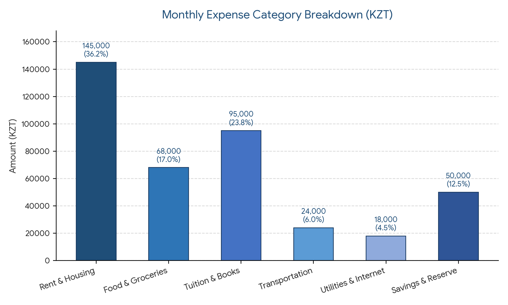

Coursework Projects
1. Financial Statement & Expense Analysis Classwork (Excel)

This project investigated which monthly expense categories account for the largest share of total spending and how overall costs can be balanced more effectively. Using Microsoft Excel, I organized raw monthly transaction records into a structured summary table, calculated category totals and percentage shares, and created a column chart to visualize the distribution. The analysis revealed that housing (36.3%) and tuition/books (23.8%) make up over half of total expenses, while discretionary categories offer the clearest opportunity for monthly budget optimization.